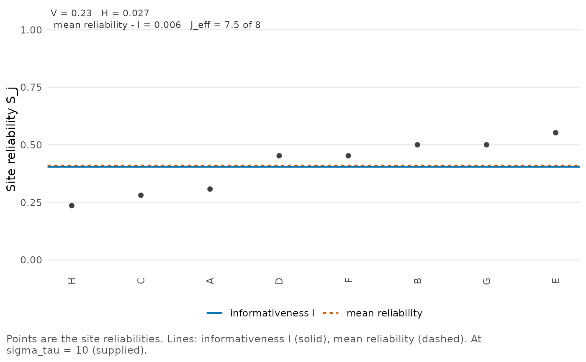
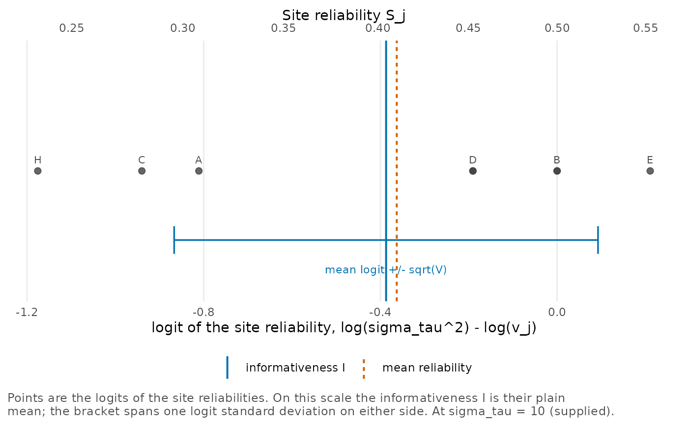
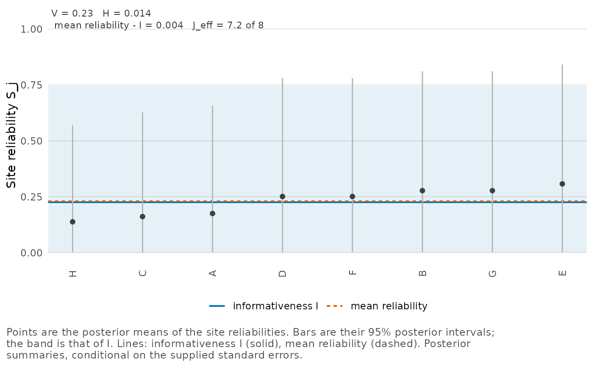

Plots the site reliabilities in order, with the informativeness and the
mean reliability as horizontal lines; for a posterior fit, with the
posterior interval of each reliability and of the informativeness. With
type = "logit" the profile is shown on the logit scale, where the
informativeness is the plain mean.
Arguments
- x
An object of class
reliability_profile,reliability_posterior,reliability_drawsorreliability_design.- type
The plot:
"reliability"(the default), the sorted reliabilities, or"logit", their logits as a strip.- centroids
The centroids shown as lines: any of
"I"(the informativeness),"mean"and"harmonic".- level
Probability content of the posterior intervals, a number between 0 and 1.
NULL, the default, uses the level of the fit.- intervals
If
TRUE(the default), a posterior fit shows the interval of each reliability and of the informativeness.- max_sites
Largest number of sites to label, a positive integer.
- ...
Must be empty.
Details
A corner label gives the logit variance \(V\), the dispersion \(H\),
the mean reliability minus \(I\) and the concentration count; for a
posterior fit, their posterior means. The intervals of the reliabilities
are the reliabilities at the quantiles of sigma_tau, because each
reliability increases with it.
On the logit scale the profile of a posterior fit is taken at the
posterior median of sigma_tau, where the informativeness is its
posterior median. The logits there are
\(\mathrm{logit}\, S_j = \log \sigma_\tau^2 - \log v_j\);
their mean is \(\mathrm{logit}(I)\), and the bracket shows
plus and minus \(\sqrt V\) around it.
Examples
prof <- reliability_profile(se = eight_schools$se, sigma_tau = 10, site = eight_schools$school)
plot_profile(prof)

plot_profile(prof, type = "logit")

fit <- reliability_posterior(estimate, se = se, site = school, data = eight_schools)
plot_profile(fit)
